Faraday Effect (2019) – opens Paper
Investigated the material-dependent Verdet constant of water by measuring polarization rotation of linearly polarized light in an applied magnetic field.
// 03. physics & research
Undergraduate physics laboratory work from Knox College, 2019, spanning optics, nuclear counting statistics, analog electronics and digital logic — the physics half of a BS in Computer Science and Physics.
Investigated the material-dependent Verdet constant of water by measuring polarization rotation of linearly polarized light in an applied magnetic field.

Investigated magnetic susceptibility of paramagnetic (Aluminum) and diamagnetic (Water) materials using a Gouy balance.
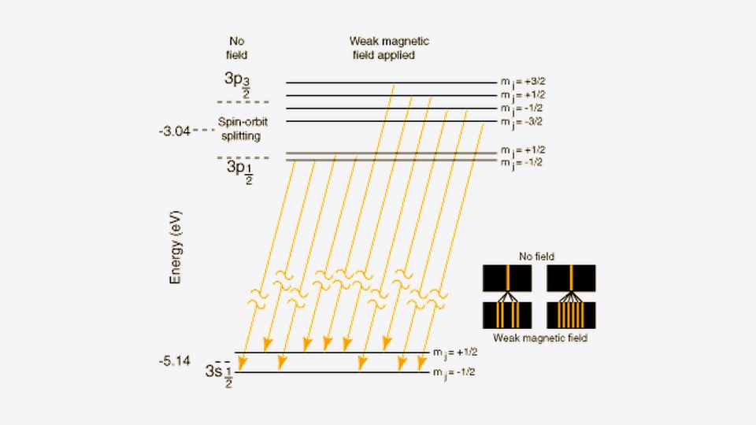
Observed spin-orbit fine structure splitting in sodium using a Michelson interferometer to identify contrast interference patterns.

Studied dependence of pendulum period on amplitude beyond small-angle approximation and measured experimental value of g.

Measured acceleration of a falling mass using video analysis in Logger Pro and compared experimental g to accepted values.
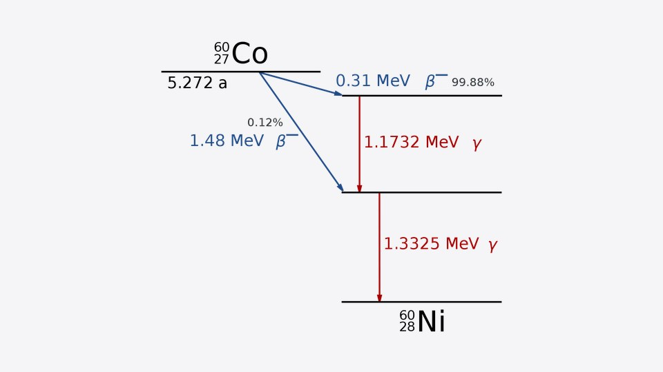
Studied constant-probability radioactive decay of Co-60, comparing Poisson and Gaussian distributions to describe the process.

Studied effects of varying load resistance on a voltage divider and verified Thevenin's equivalent circuit theorem.

Tested impedance relations for capacitors and inductors and applicability of series-parallel combination methods.
Explored transistor applications as switches and power amplifiers through discrete component experiments.

Measured resonance frequencies in air and helium to calculate the ratio of specific heat capacities (γ = Cp/Cv).
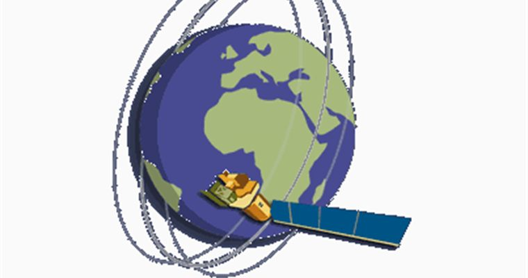
Computational simulation of satellite orbital mechanics and path visualization.

Approximating area under a curve with rectangles using Mathematica for numerical integration.
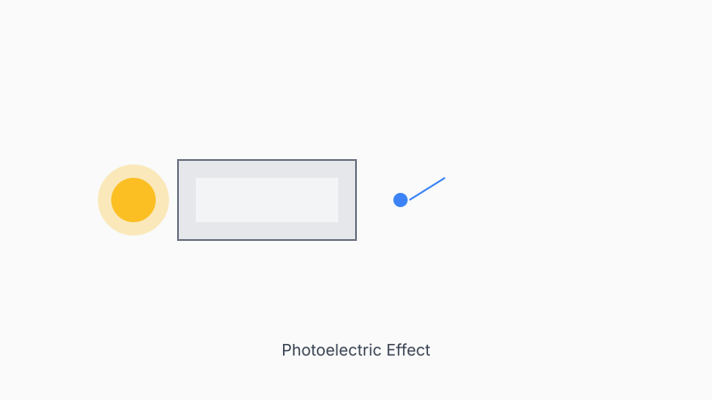
Determined Planck's constant by measuring stopping voltage as a function of incident light frequency, and verified Stoletov's law via intensity-current proportionality.
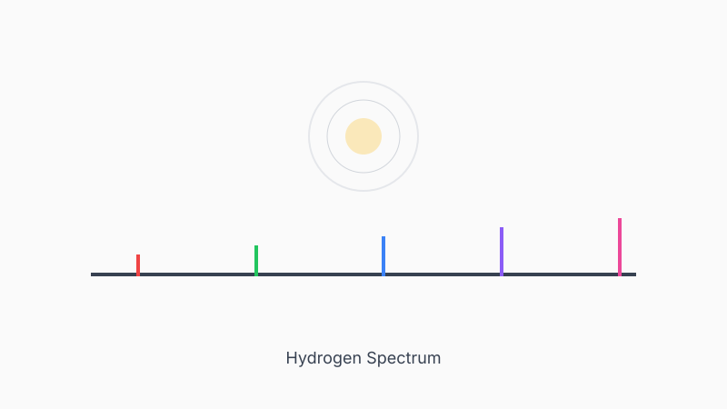
Measured wavelengths of Hydrogen, Helium, and Neon emission spectra using a diffraction grating spectrometer; tested Balmer formula and Rydberg-Ritz predictions.
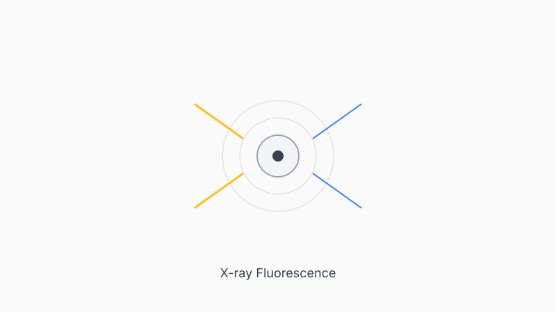
Determined atomic numbers of unknown elements via Moseley's Law by measuring K-alpha and K-beta X-ray emission energies.
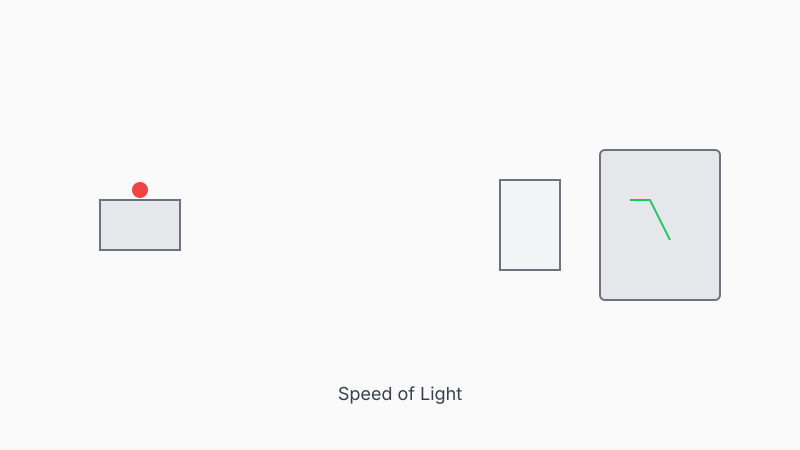
Measured the finite speed of light using a modulated Helium-Neon laser, beam splitter, and time-lag measurement on an oscilloscope.
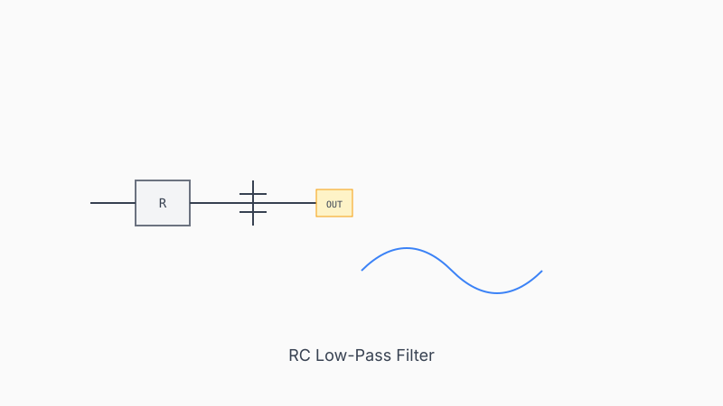
Characterized single-stage and two-stage RC low-pass filters via Bode plots, measuring cutoff frequency and roll-off slope.
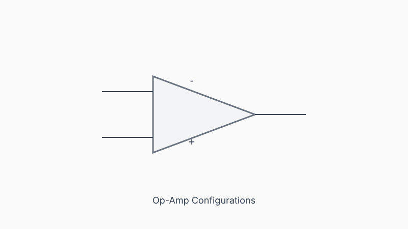
Built and characterized inverting amplifier, non-inverting amplifier, and voltage follower circuits; measured Thevenin output impedance of a function generator.
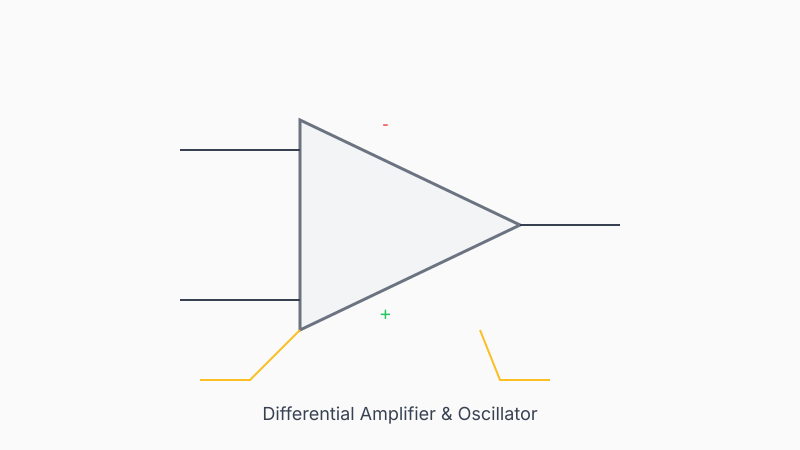
Built a differential amplifier and a relaxation oscillator using op-amps; measured slew rate and compared to manufacturer datasheet specs.
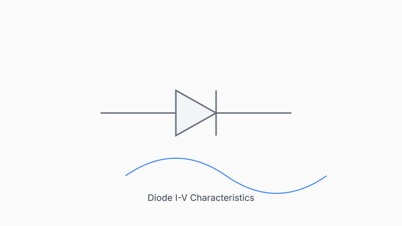
Mapped diode current-voltage curve, determined operating point via load-line analysis, and built a diode clipper circuit.
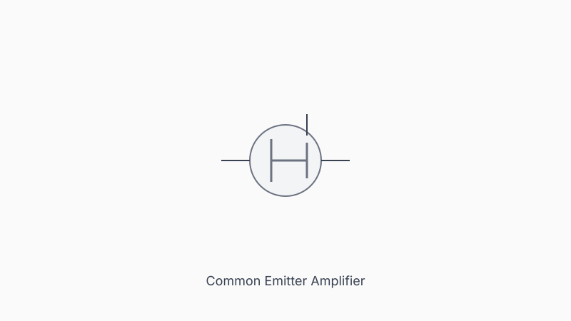
Designed and tested a BJT common-emitter amplifier; measured DC operating point, voltage gain, and high-pass cutoff frequency.
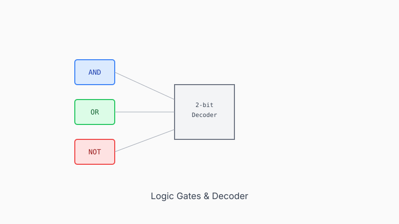
Implemented Boolean logic operations using AND, OR, and NOT gates; designed and built a 2-bit address 1-of-4 decoder circuit.
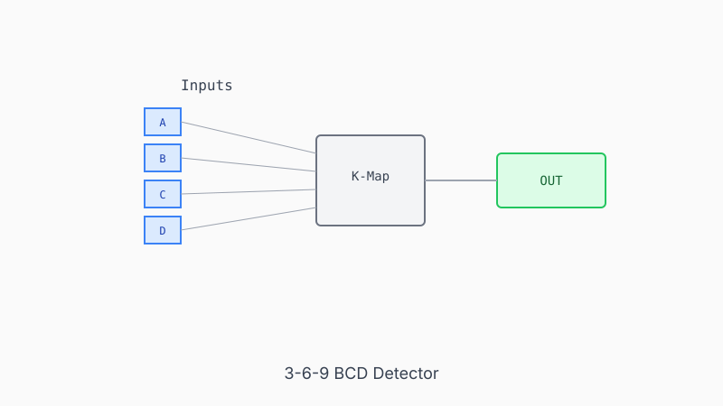
Designed a BCD-input detector circuit using Karnaugh map minimization (SOP form) and implemented two versions: discrete logic gates and a 74151 multiplexer.